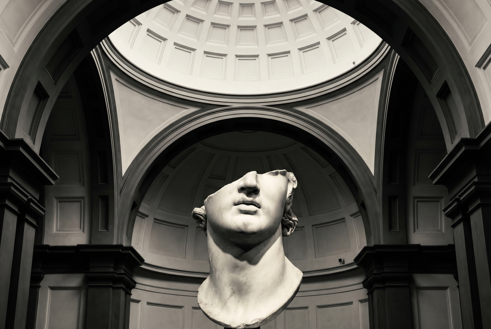
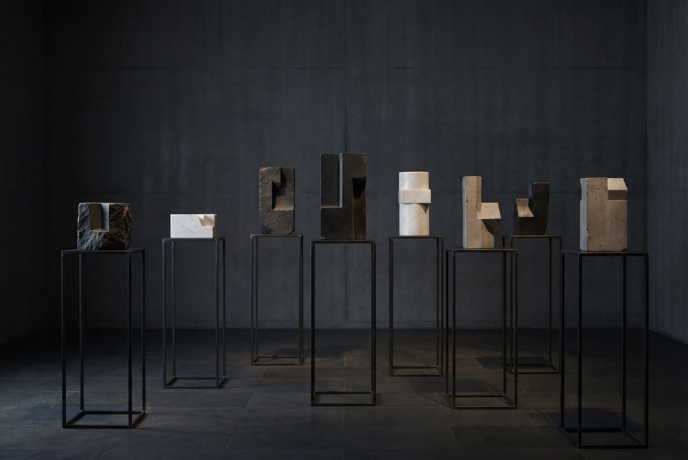

Institutionelle Autorität
Das Bode Museum bringt Herkunft, Sammlung, Kuratierung und Legitimation. Die kulturelle Gravitas bleibt klar beim Museum.

Strategisches Partnerschaftskonzept
Edition One positioniert sich nicht als Ersatz bestehender Replika-Strukturen, sondern als zeitgenössischer Editions- und Brand-Partner, der museale Autorität in eine begehrenswerte, kulturell präzise Sammlerlogik übersetzt.
Die Ausgangslage
Weltklasse-Sammlungen erzeugen nicht nur Wissen und Besuch, sondern auch kulturelle Sehnsucht. Die offene Frage ist, wie diese Sehnsucht heute jenseits des Museumsshops in ein überzeugendes, institutionell angemessenes Sammlermodell übersetzt werden kann.
Genau dort setzt diese Partnerschaft an: nicht touristisch, nicht dekorativ, nicht beliebig. Sondern mit klarer Autorität, starker Form und einem neuen Zugang zu Sammlern, Interiors und kulturinteressierten Käufern.
Das Bode Museum bringt Herkunft, Sammlung, Kuratierung und Legitimation. Die kulturelle Gravitas bleibt klar beim Museum.
Edition One bringt Formgefühl, Sammlerinszenierung, Positionierung, Storytelling und einen luxuriösen, nicht-kitschigen Markenzugang.
Nicht nur Produktverkauf, sondern ein neuer Außenraum für die Sammlung, neue Sammlergruppen und eine neue Sichtbarkeit der Institution.
Strategischer Kern
Der entscheidende Move dieser Präsentation ist die saubere Rollenverteilung: Das Museum behält die kulturelle und kuratorische Hoheit. Edition One entwickelt die zeitgenössische, sammlerorientierte Erweiterung dieser Kompetenz. So entsteht keine Konkurrenz zur bestehenden Replika-Logik, sondern eine neue Premium-Ebene darüber.
Bode Museum
Gemeinsame Plattform
Limitierte, kuratierte Editionen mit klarer Geschichte, sauberer Inszenierung und einem Vertriebs- und Kommunikationsansatz, der nicht wie Merchandising wirkt, sondern wie ein kulturelles Angebot mit Sammlerwert.
Edition One

Pilot Collection
Auswahl von 3 bis 5 Werken mit klar unterschiedlicher Sammlerlogik.
Ein Hero Piece, ein mittleres Sammlerobjekt, ein zugänglicher Entry Point.
Jedes Werk erhält eine eigene Geschichte, eine eigene visuelle Bühne und eine limitierte Editionsdramaturgie.
Mehrwert für das Bode Museum
Mehrwert für Edition One
90-Tage-Vorschlag
Gemeinsame Auswahl potenzieller Werke, Freigabelogik, narrative Leitplanken.
Positionierung, visuelle Sprache, Pricing-Ansatz, Editionsarchitektur und Storyline.
Microsite, Hero Visuals, Pilotkommunikation, Sammler- und Presse-Ansprache.
Schlussgedanke
Im Gegenteil. Genau dort, wo Autorität auf zeitgenössische Übersetzung trifft, entsteht ein neues Modell für museumsgestützte Sammlereditionen.
Nächsten Schritt definieren